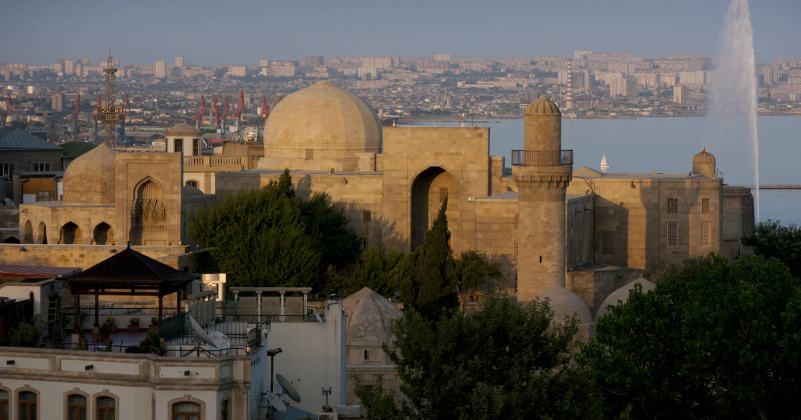

Şirvanşahlar Sarayı ve Kız Kulesi
Bu yapılar Azerbaycan’ın başkenti Bakü’nün merkezinde yer almaktadır. Şehrin mimarisi ve kültürü; Zerdüşt, Sasani, Arap, Fars, Şirvan, Osmanlı ve Rus etkilerinin izlerini taşımaktadır. Örneğin, savunma surları ve 12. yüzyıldan kalma Kız Kulesi’nin bulunduğu şehir merkezi, M.Ö. 7. ve 6. yüzyıllara kadar uzanan daha eski yapıların üzerine inşa edilmiştir. Ayrıca 15. yüzyıla ait Şirvanşahlar Sarayı, Azerbaycan’ın en önemli turistik ve tarihi yapılarından biri olarak kabul edilmektedir. Ne yazık ki sarayın üst kısmında bulunan 25 odadan yalnızca 16’sı günümüze ulaşabilmiştir. Geri kalan bölümler, taşların yerel halk tarafından ev yapımında kullanılması nedeniyle ortadan kaldırılmıştır. Saray, 17. yüzyılın ortalarında kısmen tahrip edilmiş, duvarları ise I. Petro’nun Bakü kuşatması sırasında zarar görmüştür. 19. yüzyılda saray depo olarak kullanılmıştır. Sarayın korunmasına yönelik çalışmalar ise ancak 20. yüzyılın başlarında başlamıştır. Buna karşılık, 12. yüzyıldan kalma Kız Kulesi oldukça iyi korunmuştur. 18. ve 19. yüzyıllarda deniz feneri olarak kullanılan 28 metre yüksekliğindeki kule, zaman içinde birçok kez restore edilmiştir.